Chaque slide croise un ordre taxonomique (bandeau) et un milieu dominant. Les espèces nommées servent de fil conducteur jusqu'aux chaînes alimentaires et aux adaptations.
Herbivore nocturne et solitaire (terra firme, várzea). Vulnérable, en déclin. Chassé pour sa viande.
SAJINO · Tayassu pecariBUSHMEAT
15–30 kg
Omnivore en groupes de 50–100. Défense collective très agressive. Proie du jaguar et du puma.
RONSOCO · Hydrochoerus hydrochaerisBUSHMEAT
60 kg
Plus grand rongeur au monde. Herbivore aquatique, grégaire (10–20 individus), rives et várzeas.
🖼️Image de l'espèceCliquez une carte pour afficher l'espèce
01 · Faune · Rodentia · terra firme
Mammifères herbivores & rongeurs · 2/2
AÑUJE · Dasyprocta fuliginosaBUSHMEAT
2–4 kg. Frugivore rapide de terra firme. Disperseur de graines majeur (mutualisme frugivore-plante).
MAJÁS · Cuniculus pacaBUSHMEAT
8–15 kg. Nocturne et solitaire, près des rivières. Terrier entre les racines. Chasse prioritaire (meilleure viande).
🖼️Image de l'espèceCliquez une carte pour afficher l'espèce
01 · Faune · Carnivora · terra firme
Mammifères carnivores : félins · 1/2
OTORONGO · Panthera oncaPROTÉGÉ
100–150 kg
Apex solitaire (pécari, capybara, caïman, poisson). Territoire jusqu'à 1 000 km² · < 1 000 au Pérou (quasi menacé).
PUMA · Puma concolorPROTÉGÉ
50–100 kg
Très adaptable, moins dominant que le jaguar. Distribution continentale, chasse cerfs et capybaras.
TIGRILLO · Leopardus pardalisPROTÉGÉ
11–16 kg
Nocturne, tacheté, chasse rongeurs et oiseaux. Margay arboricole et jaguarondi terrestre complètent la niche des petits félins.
🖼️Image de l'espèceCliquez une carte pour afficher l'espèce
01 · Faune · Carnivora · terra firme
Mammifères carnivores : procyonidés · 2/2
CUCHUCHO · Nasua nasuaBUSHMEAT
3–6 kg, omnivore diurne en bandes matriarcales. Museau mobile, griffes puissantes · chasse invertébrés et fruits.
MAPACHE · Procyon cancrivorusBUSHMEAT
Raton laveur crabier · semi-aquatique des rives et cochas. Omnivore nocturne · crabes, poissons, fruits. Patte avant très tactile.
OLINGO · Bassaricyon alleniPROTÉGÉ
Arboricole nocturne de la canopée (1–1,5 kg). Frugivore-insectivore · souvent confondu avec le kinkajou (chosna), mais sans queue préhensile.
🖼️Image de l'espèceCliquez une carte pour afficher l'espèce
01 · Faune · Primates · canopée
Primates & emblématiques de la canopée · 1/2
COTO · Alouatta seniculusPROTÉGÉ
4–9 kg, frugivores-folivores. Leur rugissement matinal porte jusqu'à 5 km. 4 espèces en Amazonie péruvienne.
MAQUISAPA · Ateles belzebuthPROTÉGÉ
Brachiation extrême, queue préhensile en « 5ᵉ membre ». Frugivores (80 %), sociétés en fission-fusion de 15–30 individus.
HUAPO & PICHICO · Pithecia · Saguinus spp.PROTÉGÉ
Petits frugivores de terra firme. Le pichico/tamarin (400–600 g) vit en groupes familiaux ; le huapo/saki forme des couples monogames.
🖼️Image de l'espèceCliquez une carte pour afficher l'espèce
01 · Faune · Primates · canopée
Primates & emblématiques de la canopée · 2/2
MONO ARDILLA · Saimiri sciureusPROTÉGÉ
750 g, très grégaire (40+ individus). Queue non préhensile, activité diurne intense en canopée moyenne.
PEREZOSO · Choloepus didactylusPROTÉGÉ
4–8 kg, folivore lent de canopée. Symbiose algues-moisissures sur le pelage (camouflage). Proie favorite du harpy eagle.
🖼️Image de l'espèceCliquez une carte pour afficher l'espèce
01 · Faune · Cingulata · terra firme
Mammifères : xénarthres du sol
CARACHUPA GIGANTE · Priodontes maximusPROTÉGÉ
30–50 kg
Plus grand tatou du monde · carapace à plaques mobiles, griffes puissantes. Creuse tunnels et termitières · indicateur de forêts intactes. Très rare et furtive à Pacaya-Samiria · CITES I / DS 004.
🖼️Image de l'espèceCliquez une carte pour afficher l'espèce
01 · Faune · Chiroptera · canopée & ríos
Mammifères : chauves-souris amazoniennes
MURCIÉLAGO PESCADOR · Noctilio leporinusPROTÉGÉ
≈ 10–13 cm · chasse poissons et insectes à la surface des cochas et ríos par écholocalisation. Longues pattes et serres · indicateur d'eaux productives.
MURCIÉLAGO FRUGÍVORO · Artibeus lituratusPROTÉGÉ
Grand frugivore (phyllostomidé) · disperse graines de cecropias, figuiers et palmiers. Colonne vertébrale de la régénération forestière nocturne.
MURCIÉLAGO VAMPIRO · Desmodus rotundusPROTÉGÉ
Hématophage · se nourrit surtout de sang de bétail et mammifères. Rôle pathologique (rage) parfois exagéré · ne pas capturer ni manipuler. Respecter gîtes et colonies.
🖼️Image de l'espèceCliquez une carte pour afficher l'espèce
01 · Faune · Cetacea · Sirenia · ríos
Mammifères aquatiques d'Amazonie · 1/2
BUFEO COLORADO · Inia geoffrensisPROTÉGÉ
2,5 m · 100–150 kg
Plus grand dauphin de rivière. Gris à la naissance, rosé à maturité. Amazone, Marañón, Ucayali · Pacaya-Samiria. 53 espèces de poissons chassés.
EN DANGER
Filets, mercure, barrages. Reproduction tardive (~7 ans). Légende du Boto cor-de-rosa (Partie 05).
VACA MARINA · Trichechus inunguisPROTÉGÉ
2,5–3 m · 300–500 kg
Herbivore aquatique géant · jusqu'à 50 kg de plantes/jour dans les várzeas. Gestation 13 mois · 1 petit tous les 3–5 ans.
EN DANGER
< 8 000 individus mondiaux. Lié à la Yacumama (Partie 05).
🖼️Image de l'espèceCliquez une carte pour afficher l'espèce
01 · Faune · Carnivora · Cetacea · ríos
Mammifères aquatiques d'Amazonie · 2/2
LOBO DE RÍO · Pteronura brasiliensisPROTÉGÉ
1,8 m, très rare, EN DANGER. Groupes familiaux bruyants des rivières claires · Pacaya-Samiria est le meilleur site d'observation.
TUCUXI · Sotalia fluviatilisPROTÉGÉ
≈ 1,4 m · 40 kg
Dauphin gris des eaux rapides et confluences. Très commun aux côtés du bufeo · chasse en bancs, nage rapide près des berges.
🖼️Image de l'espèceCliquez une carte pour afficher l'espèce
01 · Faune · Psittaciformes · canopée
Oiseaux remarquables : psittacidés · 1/3
GUACAMAYO · Ara macao · A. chloropterusPROTÉGÉ
150+ espèces de psittacidés. Longévité 50+ ans, intelligence élevée · victimes du trafic illégal.
GUACAMAYO AZUL · Ara araraunaPROTÉGÉ
1 m de long, plumage bleu-or. Disperseur de graines des palmiers · symbole de l'Amazonie.
TUCÁN · Ramphastos vitelinusPROTÉGÉ
Bec léger (os alvéolés), frugivore. Régulateur thermique et signal sexuel · 40+ espèces amazoniennes.
🖼️Image de l'espèceCliquez une carte pour afficher l'espèce
Folivore des marécages, « fossile vivant ». Les poussins ont des griffes alaires · digestion fermentaire unique chez les oiseaux.
CAMUNGO · Anhima cornutaPROTÉGÉ
≈ 85 cm, caroncule cornée sur le front. Marais, lacs et várzeas · cri strident (kamichi en Amazonie).
PAUJIL · Mitu tuberosumPROTÉGÉ
Hocco à rasoir · grand cracidé noir (≈ 83–89 cm) des forêts humides. Bec rouge à carène · gibier important, populations fragiles près des villages.
🖼️Image de l'espèceCliquez une carte pour afficher l'espèce
01 · Faune · Icteridae · canopée & lisières
Oiseaux remarquables : paucar · 3/3
BOCHOLOCHO · PAUCAR · Psarocolius angustifrons
Oropendola à dos roux · noir, queue jaune, dos brun-roux. Nids en « gouttes » tissés suspendus aux branches hautes · colonies bruyantes, imitateurs de cris.
ÉCOLOGIE
Frugivore-insectivore de canopée et lisières. Colonies souvent près des villages · bons indicateurs de présence forestière résiduelle.
CULTURE
« Paucar » (quechua) désigne plusieurs ictéridés (caciques / oropendolas). Folklore local : oiseau messager / annonciateur · figure familière autour de Puerto Miguel et Pacaya-Samiria.
🖼️Image de l'espèceCliquez une carte pour afficher l'espèce
01 · Faune · Gruiformes · várzea
Oiseaux des zones humides : grues & râles · 1/3
TROMPETERO · Psophia crepitansPROTÉGÉ
Terrestre des várzeas inondées. Appels puissants · l'Harpia harpyja (águila harpía) chasse au-dessus de la canopée.
TUQUI TUQUI · Porphyrio martinicusPROTÉGÉ
Plumage violet-vert iridescent. Marche sur la végétation flottante des marais et lacs d'eau noire.
GALLARETA · Porphyriops melanopsPROTÉGÉ
Proche parent du tuqui tuqui, très présent dans les zones humides amazoniennes.
🖼️Image de l'espèceCliquez une carte pour afficher l'espèce
01 · Faune · Pelecaniformes · várzea
Garzas & hérons des zones humides · 2/3
GARZA TIGRE · Tigrisoma lineatumPROTÉGÉ
Camouflage rayé, chasse immobile dans les marécages · voix rauque au crépuscule.
GARZA BLANCA · Ardea albaPROTÉGÉ
Grande et élégante, rives et várzeas · pêche poissons et amphibiens en eaux peu profondes.
GARZA CENIZA · Ardea cocoiPROTÉGÉ
Nom local au Pérou (Pacaya-Samiria). Plus grande garza amazonienne (1,5–2 kg), plumage gris cendré.
🖼️Image de l'espèceCliquez une carte pour afficher l'espèce
01 · Faune · Pelecaniformes · várzea
Garzas & hérons des zones humides · 3/3
GARZA CUERVO · Cochlearius cochleariusPROTÉGÉ
Bec en forme de bateau, nocturne · marais et mangroves, cri distinctif.
GARZA AGAMI · Agamia agamiPROTÉGÉ
Plumage vert-bronze, très discrète · espèce amazonienne emblématique des forêts inondées.
🖼️Image de l'espèceCliquez une carte pour afficher l'espèce
Emblématique de Pacaya-Samiria (Yanayacu-Pucate). 45–58 cm, tête blanche « canas ». Chasse poissons et reptiles depuis les branches basses au-dessus des lagunes.
GAVILÁN POLLERO · Rupornis magnirostrisPROTÉGÉ
Le rapace le plus courant en Amazonie · 30–40 cm. Perché sur les câbles et arbres isolés, chasse reptiles, oiseaux et rongeurs en lisière.
CARACARA CURIQUINGUE · Milvago chimachimaPROTÉGÉ
Tête jaune, très visible le long des rivières. Opportuniste : charognard, chasseur d'insectes et de petites proies · souvent en groupes.
🖼️Image de l'espèceCliquez une carte pour afficher l'espèce
01 · Faune · Accipitriformes · canopée
Rapaces diurnes · apex & forestiers · 2/2
ÁGUILA HARPÍA · Harpia harpyjaPROTÉGÉ
Plus grande aigle du Néotropique · envergure ~2 m. Chasse paresseux, singes et grands arbres. Rare mais présente dans les forêts intactes autour de Pacaya-Samiria.
ÁGUILA PECHINEGRA · Spizaetus tyrannusPROTÉGÉ
Aigle forestier puissant (~70 cm). Chasse en canopée · proies arboricoles (singes, oiseaux). Cris puissants au-dessus de la forêt.
GAVILÁN DE COLA CORTA · Accipiter melanoleucusPROTÉGÉ
Rapace agile des étages moyens de la forêt. Vol rapide entre les arbres · chasse oiseaux et petits mammifères.
🖼️Image de l'espèceCliquez une carte pour afficher l'espèce
01 · Faune · Cathartiformes · canopée
Rapaces & charognards : cóndor de la selva
CÓNDOR DE LA SELVA · Sarcoramphus papaPROTÉGÉ
Vautour pape / rey gallinazo · tête multicolore, plumage crème-noir. Charognard de canopée : ouvre les carcasses pour les autres nécrophages. Souvent perché au soleil · emblème forestier amazonien.
🖼️Image de l'espèceCliquez une carte pour afficher l'espèce
01 · Faune · Strigiformes · canopée & lisière
Rapaces nocturnes · Pacaya-Samiria
BÚHO DE ANTEOJOS · Pulsatrix perspicillataPROTÉGÉ
Grand hibou amazonien (~45 cm), masque facial distinctif. Chasse mammifères et oiseaux la nuit · appels graves très audibles en lisière.
BÚHO LISTADO · Ciccaba huhulaPROTÉGÉ
Plumage rayé noir et blanc, 35–40 cm. Nocturne strict des forêts denses · chasse rongeurs et amphibiens au sol.
BÚHO ESTIGIO · Asio stygiusPROTÉGÉ
≈ 40 cm, aigrettes courtes, regard pénétrant. Chasse à partir de perchoirs en lisière et zones dégagées · vocalisations nocturnes caractéristiques.
🖼️Image de l'espèceCliquez une carte pour afficher l'espèce
Caïman à lunettes · 1,5–2,5 m, le plus courant. Crête osseuse entre les yeux (« lunettes »). Cochas, rivières · poissons et charognes. Peu agressif.
LAGARTO NEGRO · Melanosuchus nigerPROTÉGÉ
Jusqu'à 4–5 m, apex aquatique. Peau noire, crâne massif · potamotrygons, capybaras, pécari. Menacé (surchasse historique) · en redressement à Pacaya-Samiria.
🖼️Image de l'espèceCliquez une carte pour afficher l'espèce
01 · Faune · Squamata · Viperidae · terra firme
Reptiles : serpents venimeux · vipéridés · 3/4
EQUIS · FER-DE-LANCE · Bothrops atroxPROTÉGÉ
Vipère piton (≈ 1,5 m), venin hémotoxique · cause majeure d'envenimations au Pérou et en Amazonie. Nocturne, camouflée dans la litière de terra firme.
JERGÓN SHUSHUPE · Lachesis mutaPROTÉGÉ
Bushmaster · plus grand vipéridé du monde (jusqu'à 3 m). Terrier / litière de forêt primaire · venin hémotoxique très volumineux. Rarement croisé, morsure redoutée.
Coral aquatique amazonienne · bandes rouge-jaune-noir (aposématisme). Venin neurotoxique · morsure rare mais grave. Ne pas confondre avec les mimétiques (falsa coral).
NACA-NACA · Micrurus lemniscatusPROTÉGÉ
Autre coral répandue en Amazonie. Bandes plus fines · même famille neurotoxique. Nom local courant à Loreto · souvent citée avec l'equis dans les alertes villageoises.
🖼️Image de l'espèceCliquez une carte pour afficher l'espèce
01 · Faune · Anura · terra firme
Amphibiens : une diversité extrême
RANITA PUNTA DE FLECHA · Oophaga pumilioPROTÉGÉ
Couleurs vives (aposématisme). Alcaloïdes pour flèches empoisonnées · plus toxiques au contact de certaines proies.
RANA ARLEQUÍN · Atelopus sp.PROTÉGÉ
Endémisme extrême · espèces en déclin rapide. Jusqu'à 100+ espèces sur une petite région amazonienne.
RANA COHETE · Allobates femoralisPROTÉGÉ
Menaces globales : chytride, climat, perte d'habitat · les amphibiens sont les vertébrés les plus affectés.
🖼️Image de l'espèceCliquez une carte pour afficher l'espèce
Raie d'eau douce ocellée · fond sablonneux des cochas. Dard caudal à venin : douleur intense, risque d'infection. Ne jamais marcher pieds nus dans les eaux troubles · ne pas pêcher / manipuler.
RAYA AMAZÓNICA · Potamotrygon spp.PROTÉGÉ
Famille Potamotrygonidae endémique d'Amazonie · plusieurs espèces en Loreto. Toutes portent une ou plusieurs épines caudales. Benthiques, souvent enfouies · respect strict des protocoles de baignade.
🖼️Image de l'espèceCliquez une carte pour afficher l'espèce
Leopardus pardalis (tigrillo), Pteronura (lobo de río), reptiles, oiseaux insectivores.
APEX (RARES)
Panthera onca (otorongo), Eunectes murinus (yacumama), Harpia harpyja (águila harpía) · très peu nombreux.
DÉCOMPOSEURS
Atta cephalotes (curuhuinsi), termites, champignons, bactéries · recyclage rapide en climat chaud-humide.
Efficacité trophique ≈ 10 %· seuls 10 % de l'énergie passent au niveau supérieur : c'est pourquoi l'otorongo et le yacumama sont si rares malgré l'abondance des proies (sajino, ronsoco).
01 · Faune · Adaptations
Adaptations remarquables
Camouflage
Boa constrictor (mantona) parmi les lianes, Tigrisoma lineatum (garza tigre) immobile dans les marécages, Choloepus (paresseux) couvert d'algues.
Dasyprocta (añuje) disperse les graines, Atta (curuhuinsi) cultive des champignons, Inia geoffrensis (bufeo) chasse par écholocalisation dans les eaux troubles. Chaque espèce de ce deck occupe une niche précise · la perte d'une espèce clé perturbe des cascades trophiques entières.
01 · Faune · Règle AKUU
Protections faune : règle bénévole
Espèces strictement protégées
PROTÉGÉ
Interdiction absolue : chasse, pêche, consommation et achat
Bufeo colorado, tucuxi, manatí, lobo de río · otorongo, puma, tigrillo, margay, jaguarondi · tous primates (coto, maquisapa, huapo, pichico, mono ardilla, perezoso) · sachavaca · carachupa gigante · guacamayos, rapaces, cóndor de la selva, paujil · chauves-souris · lagarto negro · tortues (charapas) · yacumama, mantona · raies.
Brésil Lei 5.197/1967 art. 1 · Pérou DS 004-2014-MINAGRI (CR/EN) · Colombie Ley 2111/2021 · Bolivie Ley 1333/1992 · Équateur COA 2017 · Guyane arrêtés 1986/2015/2020 · CITES Annexe I
Viande de brousse (bushmeat)
BUSHMEAT
Ne pas demander, ne pas acheter, ne pas consommer
Sajino (pécari), majás (paca), ronsoco (capybara), añuje (agouti) · coati, mapache · lagarto blanco (caïman à lunettes) · doncella et autres poissons hors cadre légal.
Gibier parfois légal pour les communautés natives (chasse de subsistance, Ley 29763 Pérou). Strictement interdit aux bénévoles et touristes dans tous les pays amazoniens. Au Brésil, toute chasse de faune sauvage est un délit pénal (Lei 9.605/1998, art. 29 : 6 mois à 1 an de détention).
Fermetures saisonnières (vedas)
VEDA
Vérifier auprès des autorités compétentes (PRODUCE, SERNANP)
Paiche sauvage (Arapaima gigas) : veda du 1er octobre au 28 février. Interdiction totale de pêche, transport, vente et consommation pendant la période de reproduction.
Privilégier le paiche d'élevage si proposé. Dans les aires naturelles protégées (RN Pacaya-Samiria), la pêche industrielle est interdite en toute saison (Cour Suprême, janvier 2026). Vérifier les dates exactes auprès des autorités compétentes, pas uniquement auprès du guide local.
En cas de doute = non
AKUU applique le référentiel le plus restrictif d'Amérique latine. Les communautés natives peuvent avoir des droits de subsistance. Les bénévoles AKUU ne chassent pas, ne pêchent pas pour le sport, et n'achètent pas de viande de brousse.
Dans une RN (Pacaya-Samiria) : suivre SERNANP et le protocole AKUU. Pas de trophées, plumes, peaux, œufs, dentition, ni plats « exotiques » de faune sauvage.
Brésil Lei 5.197/1967 · Pérou DS 004-2014-MINAGRI · Lei 9.605/1998 · Colombie Ley 2111/2021 · Guyane arrêtés 1986/2015/2020 · CITES
Pionnier des trouées · mutualisme Azteca. Arbre de prédilection des paresseux (Bradypus). Feuilles à tryptamines (DMT signalé chez plusieurs Cecropia).
BALSA · Ochroma pyramidale
Bois ultra-léger · radeaux, isolation, artisanat. Croissance très rapide.
CAPIRONA · Calycophyllum spruceanum
Écorce lisse caractéristique · charbon, poteaux et constructions légères.
🖼️Image de la planteCliquez une carte pour afficher l'espèce
Liane inhibiteur MAO · décoction 4 h+ avec chacruna, effet 4–6 h.
CHACRUNA · Psychotria viridis
Source de DMT · associée à la liane pour le breuvage psychédélique.
🖼️Image de la planteCliquez une carte pour afficher l'espèce
02 · Flore · Alertes bénévoles
Ayahuasca : alertes et effets nocifs documentés
À l'intention des volontaires tentés par l'expérience : ce n'est pas anodin. Des effets graves sont scientifiquement documentés. Ne jamais improviser.
Interactions médicamenteuses mortelles
Avec les antidépresseurs (ISRS, IMAO) et de nombreux médicaments : risque de syndrome sérotoninergique, potentiellement fatal. L'arrêt d'un traitement ne se fait que sous suivi médical.
Risque cardiovasculaire
Le breuvage élève la tension et le rythme cardiaque : danger d'arythmie, AVC ou arrêt cardiaque, surtout en cas de pathologie cardiaque non diagnostiquée.
Risque psychiatrique
Peut déclencher des épisodes psychotiques prolongés, en particulier chez les personnes ayant des antécédents (schizophrénie, bipolarité, manie), personnels ou familiaux.
Centres non régulés
Facilitateurs non qualifiés, additifs dangereux (toé/Brugmansia toxique, tabac), absence de bilan médical. Des cas d'abus et de décès sont documentés en retraite.
Si tu envisages malgré tout :bilan médical préalable, centre sérieux et encadré, déclare TOUS tes médicaments, jamais seul·e, jamais mélangé à d'autres substances.
02 · Flore · Fabaceae · Cactaceae · végétalismo
Autres plantes psychoactives
YOPO · Anadenanthera colubrina
Graines contenant du 5-MeO-DMT, prisées en poudre nasale (rapé). Effets intenses et brefs. Usage précolombien, aujourd'hui rare.
HUACHUMA · SAN PEDRO · Echinopsis pachanoi
Cactus à mescaline, tradition cérémonielle du nord du Pérou, moins documenté que l'ayahuasca.
🖼️Image de la planteCliquez une carte pour afficher l'espèce
02 · Flore · Anura · Phyllomedusidae
Kambo : la « médecine de la grenouille »
SAPO VERDE · Phyllomedusa bicolorPROTÉGÉ
Sécrétion appliquée sur brûlures cutanées · usage matsés et katukina. Peptides puissants : purge violente, tachycardie, gonflement.
🖼️Image de l'espèceCliquez une carte pour afficher l'espèce
Risques documentés
Hyponatrémie, convulsions · mort cérébrale documentée (2025). Jamais combiné à l'ayahuasca. Ne jamais improviser.
Usages traditionnels locaux · les bénévoles ne reproduisent jamais ces techniques.
BARBASCO · Lonchocarpus urucu
Roténone · étourdit les poissons en eau calme. Technique de pêche communautaire · jamais pour les bénévoles.
AJO SACHA · Mansoa alliacea
« Ail de la forêt » · odeur forte. Utilisé par les chasseurs (masquer l'odeur humaine, bains rituels) et comme antiparasitaire.
SURI · GUSANOS DE AGUAJE · Rhynchophorus
Larves dans troncs / fruits de palmiers (Mauritia flexuosa et autres). Appât de pêche très prisé · aussi aliment traditionnel.
🖼️Image de la planteCliquez une carte pour afficher l'espèce
02 · Flore · Écologie
Symbioses & relations mutualistes
CÉTICO · FOURMIS & PARESSEUX · Cecropia · Azteca
Gîte pour fourmis Azteca · feuilles préférées des paresseux. Tryptamines (dont DMT signalé) dans les feuilles.
VICTORIA AMAZONICA · Victoria amazonica
Nénuphar géant des lacs de várzea · pollinisation nocturne par coléoptères.
MYCORHIZES
90 % des plantes amazoniennes dépendent des champignons racinaires sur sols pauvres · réseau souterrain essentiel.
🖼️Image de la planteCliquez une carte pour afficher l'espèce
03
Partie 03
Enjeux environnementaux
Moteurs de destruction · Déforestation · Mercure · Climat · Point de bascule · Peuples
03 · Enjeux
Moteurs de destruction
Élevage & agriculture
1er moteur de déforestation en Amazonie
Pâturages et cultures (soja, palmier) sont les principaux moteurs de déforestation dans le biome. L'élevage bovin dégrade les sols, alimente la déforestation et reste souvent improductif. Au Brésil, les politiques publiques ont longtemps favorisé l'expansion de l'agrobusiness.
~18 % des forêts converties (SPA/WWF). ~85 % de la perte historique au Brésil. Soja et bœuf brésiliens exportés vers Chine, Europe et USA.
Exploitation forestière
Légale et illégale : le bois qui ouvre la forêt
L'exploitation du bois (acajou, shihuahuaco, cèdre) dégrade la forêt et ouvre des routes qui accélèrent la colonisation agricole. Au Brésil, l'exploitation illégale fournit plus de bois que le marché légal. Au Pérou, 50 %+ du bois est coupé sans permis.
Chaîne de valeur acajou : grume 100–200 $/m³ en forêt → meuble fini 1 500–3 000 $/m³. L'incitation économique à la déforestation reste extrêmement puissante.
Orpaillage illégal
400 tonnes d'or par an, au prix du mercure
Les pays amazoniens produisent environ 400 tonnes d'or par an, dont une part significative de manière illégale (36 % au Brésil, 77–90 % en Équateur et au Venezuela). L'orpaillage pèse ~10 % de la déforestation brésilienne et contamine les cours d'eau au mercure.
Économie de la pauvreté : 50–100 $/jour contre ~10 $/jour en agriculture. Madre de Dios : 50 000+ mineurs.
Infrastructure
Routes, barrages et ports : accélérateurs silencieux
136 000 km de routes construites en Amazonie, dont 16 900 km traversent des territoires indigènes. 412 barrages en service ou en projet. Les routes ouvrent l'accès à des zones vierges et alimentent déforestation, colonisation et exploitation illégale.
45 % des projets routiers coûtent plus que leurs bénéfices (IPAM/FCDS). Dorado du Madeira : −90 % depuis les barrages Jirau et Santo Antônio.
Incendies
La forêt amazonienne n'est pas adaptée au feu
Les forêts très humides n'ont pas évolué avec le feu. Déforestation, sécheresse et agriculture créent des incendies catastrophiques. Les feux détruisent le sous-bois, tuent la faune et peuvent modifier définitivement l'écosystème.
2024 : record, 2,8 M ha de forêt primaire impactés par le feu (MAAP). Spirale feux ↔ climat.
03 · Enjeux
Déforestation : les chiffres à jour
~18 %
des forêts amazoniennes converties (perte historique cumulée · SPA / WWF 2022). ~850 000 km², ordre de grandeur France + Allemagne
+17 %
supplémentaires hautement dégradées (~1 million de km²), distinct de la déforestation pure
~31 %
déjà perdus dans le tiers oriental du biome (MAAP), au-delà du seuil de bascule local
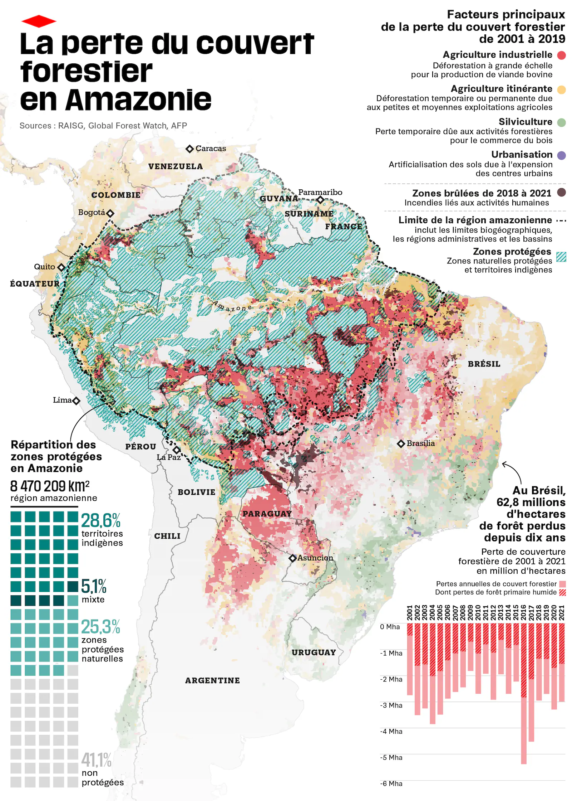
03 · Enjeux
Dégradation & dynamique récente
Dégradation ≠ déforestation, mais souvent pire
Les émissions de CO₂ liées à la dégradation forestière peuvent dépasser celles de la déforestation nette. Les forêts dégradées perdent microclimat, structure et services écosystémiques, et deviennent plus inflammables.
Accaparement des terres
La déforestation est liée à l'accaparement foncier : transferts vers agrobusiness, biocarburants, mines et plantations. La spéculation précède souvent le défrichement.
Tendance récente
2023 : nette baisse de la déforestation au Brésil (−62 % MapBiomas Amazonie). 2024 : rebond des feux, 4,5 M ha de forêt primaire touchés par déforestation + feu combinés (record MAAP).
03 · Enjeux
Incendies : le paradis en flammes
Des forêts qui ne brûlent pas naturellement
L'humidité élevée rend les forêts peu inflammables en conditions normales. Les feux sont quasi exclusivement d'origine humaine : brûlage agricole, défrichement, spéculation foncière.
2,8 M ha
de forêt primaire impactés par le feu en 2024, record absolu (précédent : 1,7 M ha en 2016). 95 % au Brésil et en Bolivie.
Repère 2020–2021 (souvent cité)
2020 : >2 500 grands incendies détectés (MAAP), ~90 % au Brésil. 2021 : les feux ont causé ~22 % de la perte de forêt primaire, soit ~436 000 ha, chiffre correct mais désormais dépassé par 2024.
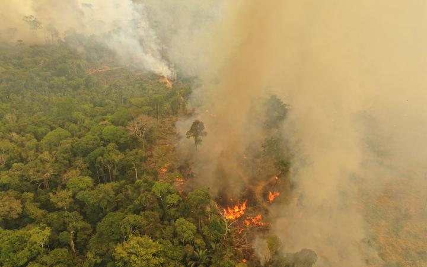
03 · Enjeux
Spirale feux–climat
Forêts inondables : le paradoxe
Les forêts de várzea, paradoxalement, sont plus inflammables en saison sèche : leur sous-bois riche en humus s'assèche vite et brûle intensément, pouvant détruire jusqu'à 90 % du couvert forestier.
Spirale négative feux–climat
Changement climatique → sécheresses → feux plus intenses → émissions de GES → climat encore plus sec. En 2024, l'impact des feux a dépassé la déforestation nette comme pression sur la forêt primaire (MAAP).
Politique du feu = politique de la forêt
Contrôler le défrichement reste l'un des leviers les plus efficaces : la majorité des incendies majeurs partent de zones récemment déboisées.
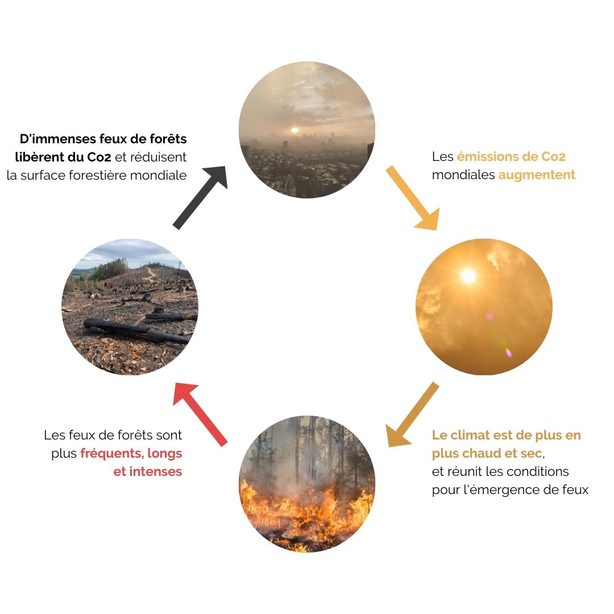
03 · Enjeux
Or et mercure : le poison invisible
838 t/an
de mercure émis par l'orpaillage amazonien (réf. ~2015). 24–27 % des émissions mondiales
64 %
du mercure dans les rivières amazoniennes provient de l'activité minière
Bioaccumulation
Méthylmercure → poissons → humains. Munduruku (FIOCRUZ 2020) : 6/10 au-dessus des normes · 4–18× les limites dans certains poissons · 15,8 % des enfants avec troubles neurodéveloppementaux.
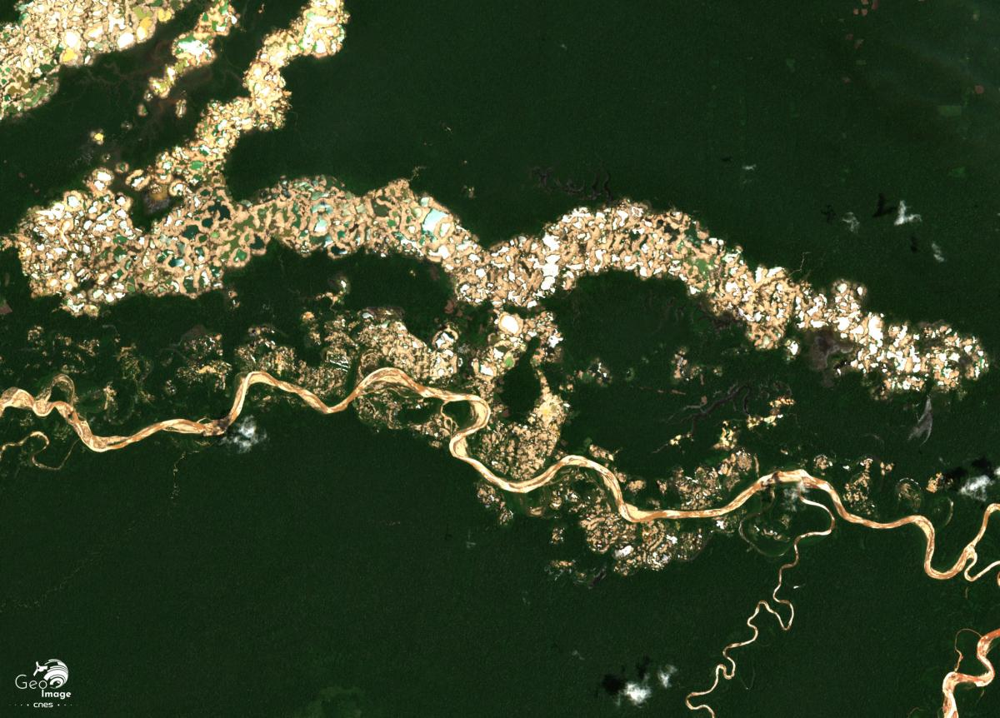
Économie derrière le poison
50–100 $/jour vs ~10 $/jour en agriculture. 50 000+ mineurs à Madre de Dios. Traces de mercure aussi chez jaguars, loutres, dauphins et tortues.
03 · Enjeux
Routes, barrages, ports
136 000 km
de routes en Amazonie, dont 16 900 km à travers des territoires indigènes
412
barrages en service, construction ou projet · 51 affectent les 6 grandes rivières andines
Les routes ouvrent la forêt
Accès → colonisation → bois → frontière agricole. 45 % des projets routiers ont un coût > bénéfices (IPAM/FCDS). Barrages = 1ʳᵉ cause de PADDD (déclassement d'aires protégées).
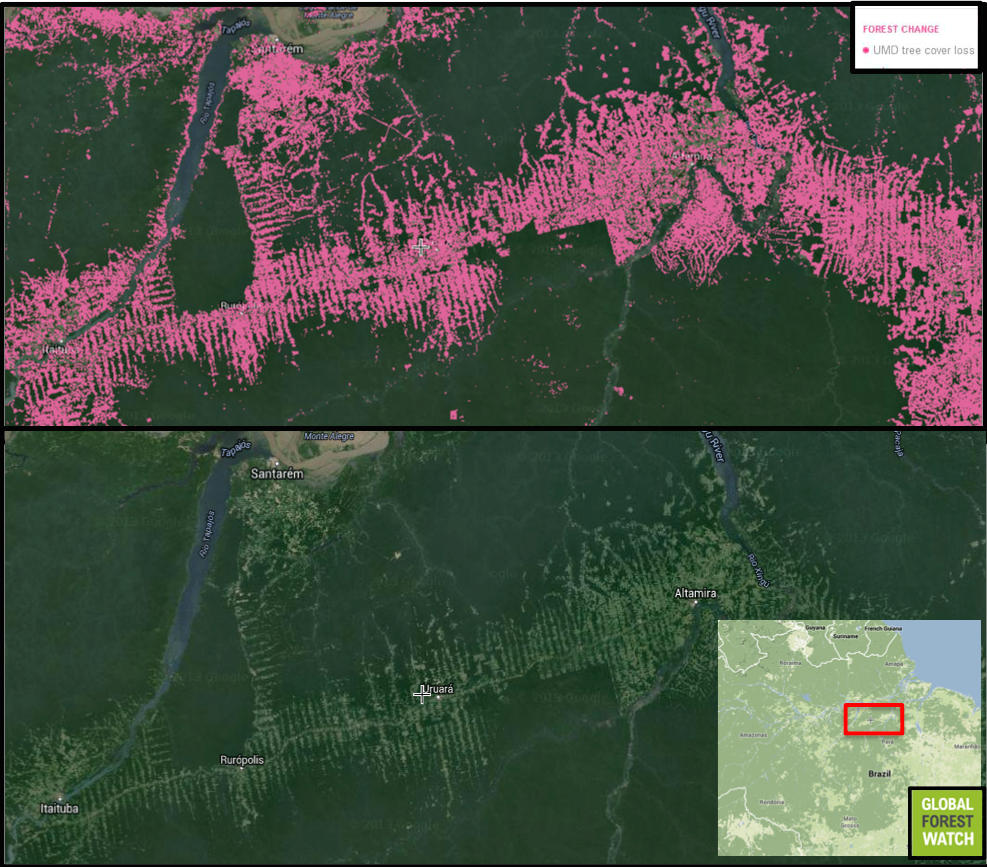
03 · Enjeux · Vidéo
Vidéo · ATLAS · en session
Comment cette route a détruit la forêt amazonienne ?
Cas BR-319 (Manaus–Porto Velho) : comment une infrastructure ouvre la forêt à la colonisation, au bois et à l'agrobusiness, illustration directe de la slide précédente.
Peaux de caïman et de pécari, reptiles vivants, orchidées, perroquets, cèdre et acajou. 250 000 perroquets exportés depuis la Guyane, le Pérou et le Suriname (2000–2013). Trafic de parties de jaguar vers la Chine.
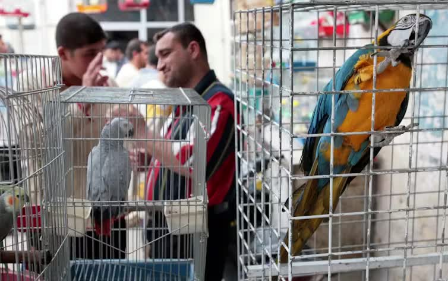
Le jaguar menacé
600 crocs saisis en Bolivie (2013–2020)
Réseaux liés à l'exploitation minière illégale, au narcotrafic et à la déforestation. La demande de médecine traditionnelle asiatique alimente le commerce de parties d'animaux.
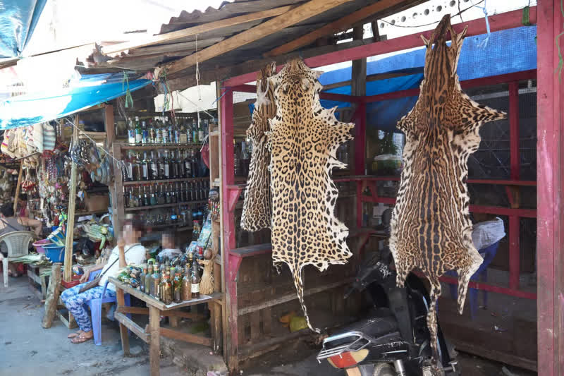
Surpêche & dauphins
Paiche en danger · poissons migrateurs >90 % des prises
Le paiche (Arapaima gigas) est menacé. Chair de dauphin de rivière utilisée comme appât pour le piracatinga. Inia geoffrensis classé En danger (UICN 2018). Moratoire au Brésil.
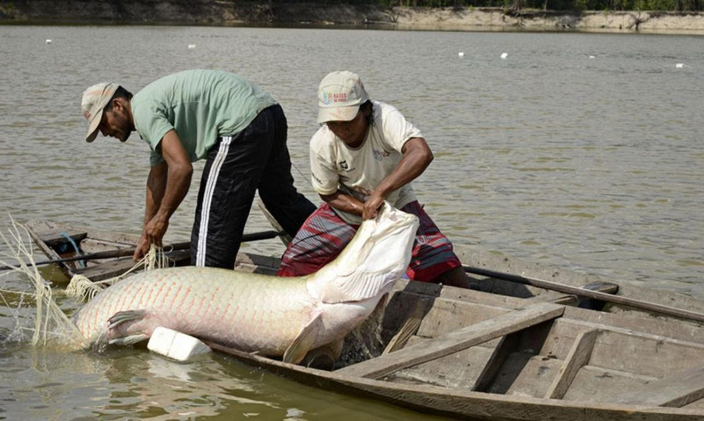
03 · Enjeux
Pêche illégale : la triple frontière
La route du Yavarí
Lacs indigènes → ports → capitales
Paiche / pirarucú (Arapaima gigas) extrait illégalement des territoires du Vale do Javari (Brésil), puis convoyé sans contrôle vers Islandia, Santa Rosa, Benjamin Constant et Leticia. Une partie part en chambre froide vers Iquitos, Lima, Bogotá, et jusqu'en Europe.
Espèces aussi ciblées : surubí, gamitana, pacú, bagres, piracatinga.
L'impunité des 3 pays
Zéro contrôle d'origine aux quais
DIREPRO (Pérou), IBAMA (Brésil) et AUNAP (Colombie) : inspection faible ou absente. Poisson brésilien souvent revendu comme « péruvien ». Au Pérou, seulement 3 saisies documentées dans la zone entre 2011 et 2022.
2014–2022 : le Pérou a exporté plus de paiche que le Brésil (~378 t vs ~321 t), signal d'un circuit opaque.
Lien AKUU
Narcopêche · veda · traçabilité
Le narcotrafic finance essence, filets et glace ; mêmes routes que la coca. Violence et impunité (assassinats de Bruno Pereira & Dom Phillips, 2022). Pour les bénévoles : respecter les vedas du paiche, ne pas acheter de poisson « sauvage » sans origine claire, privilégier l'élevage tracé.
Règle AKUU : en cas de doute = non. Vérifier auprès de SERNANP / PRODUCE, pas seulement du guide local.
Crues autrefois tous les 20 ans → tous les 4 ans. Saison sèche allongée d'un mois au sud. 2015, 2016, 2020 et 2023–24 parmi les plus critiques.
1/3 des espèces menacées
Extinction locale possible si le réchauffement s'accélère. Plantes et amphibiens les plus vulnérables.
Eaux de surface en baisse
Amazonie brésilienne : diminution depuis 2010 (WWF/iMazon). Lien direct sécheresses / précipitations.
Glaciers andins : −50 %
Fonte depuis 1970 → menace l'eau de l'Amazonie occidentale. Scénario « Amazonie sèche » + déforestation.
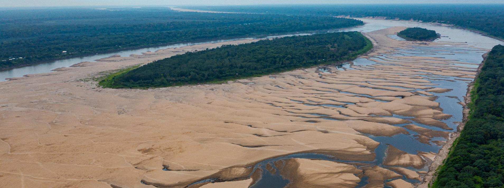
03 · Enjeux
Le point de bascule (tipping point)
20–25 %
seuil de déforestation au-delà duquel de larges pans basculent vers un état plus sec / savane. Bassin : ~18 % convertis + 17 % dégradés. Est amazonien : déjà ~31 %.
50–75 %
des précipitations amazoniennes recyclées par la forêt (évapotranspiration)
Le cercle vicieux
Moins de forêt → moins d'évapotranspiration → moins de pluie → sécheresses → incendies → encore moins de forêt. Auto-amplification jusqu'à l'irréversible.
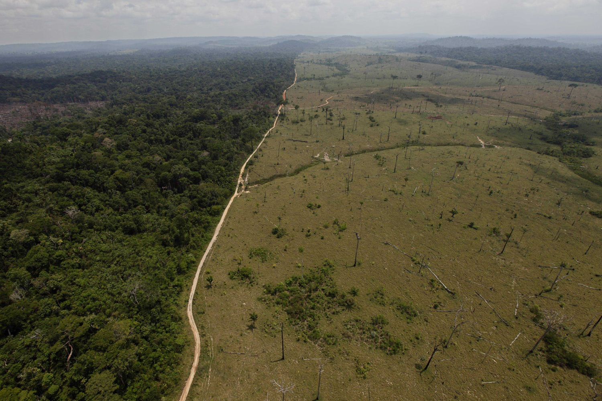
Il reste une fenêtre étroite pour agir
Cesser, pas seulement ralentir, la perte de forêts. 150–200 Gt de carbone stockés ; leur libération aggraverait le réchauffement mondial. (WWF 2022)
03 · Enjeux
Peuples sous pression
47 M
de personnes en Amazonie, dont 2,2 M d'autochtones · 511 groupes ethniques
66
peuples en isolement volontaire. Contact forcé = épidémies, perte de territoire, destruction culturelle
Mashco-Piro
750–1 000 personnes en isolement. Territoire rétréci par madereros, orpailleurs et narcotrafiquants. Migrations forcées de plus en plus fréquentes.
Sécurité alimentaire, santé, foncier
Cycles de pluie bouleversés, feux, mercure (Cocama-Cocamilla, Munduruku), incursions minières et forestières. 25 % des territoires autochtones mondiaux sous forte pression extractive.
Les gardiens de la forêt
Les territoires autochtones présentent des taux de déforestation inférieurs aux zones non protégées. Soutenir leurs droits, c'est protéger l'Amazonie.
03 · Enjeux
Protéger : le défi des aires protégées
25,3 %
du bassin légalement protégé (aires protégées). Plus de la moitié de l'Amazonie sous un régime de protection (AP + territoires indigènes)
27 %
territoires indigènes reconnus, rempart essentiel contre la déforestation
Pacaya-Samiria & gardiens de la forêt
RN Pacaya-Samiria (où AKUU intervient) : tensions conservation / pêche / communautés. Les territoires autochtones ont des taux de déforestation inférieurs. Soutenir leurs droits, c'est protéger l'Amazonie. 69 cas PADDD (2008–2016).
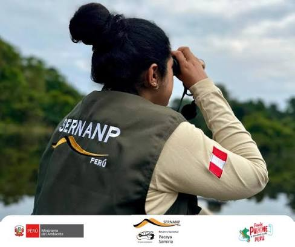
03 · Enjeux · Pour aller plus loin
Hors session · non obligatoire
Amazonie brésilienne, un autre regard
Documentaire Cirad / Galaxie (2022) · populations locales, restauration de paysages, surveillance indigène et filière açaí, contrepoint « solutions » après le chapitre destruction.
Fil conducteur du Musée Shapishiko (Puerto Miguel) · récits kukama-kukamiria et voisins du Haut Amazone
EAU · KURUARA
Monde aquatique
Déluge · Karuaras · Boto · Purahua / Yacumama. Rivière vivante, villages sous l'eau, esprits des profondeurs.
FORÊT · IWIRATI TUWA
Monde terrestre
Chullachaki / Shapishico · Tunche · Sachamama. Terra firme dense, esprits gardiens, pièges et tabous.
CIEL · KUARACHI / TSUMI
Monde céleste & canopée
Pléiades · Homme Héron · Trueno Mama · Tsumi. Astres, oiseaux métamorphes, chamanisme.
05 · Mythologie · Monde de l'eau
Le déluge : la terre se renverse
Temps primordial
Monde chaotique où chaque animal pouvait se faire personne. Pas encore d'harmonie entre êtres et milieux.
Le bouleversement
La terre se renverse sur elle-même (« diluvio » kukama) · les êtres sont dispersés dans les trois mondes : eau, terre, ciel.
Ce qui en découle
Les Karuaras restent dans l'eau et deviennent esprits. D'autres peuplent la forêt ou le firmament. Le mythe fondateur explique pourquoi rivière, forêt et ciel sont peuplés d'êtres métamorphes, et pourquoi les Kukama se disent issus à la fois des humains et des gens de l'eau.
05 · Mythologie · Monde de l'eau
Karuaras : le peuple de l'eau
Qui sont-ils ?
Anciens humains devenus êtres surnaturels après le déluge. Vivant sous l'eau dans des villages / cités · gardiens des poissons et esprits aquatiques (Yacuruna / Kuruara).
Apparence
Pieds à l'envers, griffes, peau verdâtre, parfois sans dos. Métamorphes : dauphins, boas, sirènes.
Avec les humains
Récompensent ou punissent. Si le village maltraite la rivière, ils grattent la berge la nuit pour entraîner la terre ferme dans le fleuve.
Lien fondateur
Dans le mythe de création, l'épouse du premier Kukama est une jeune Karuara · tous les Kukama sont descendants des deux mondes.
05 · Mythologie · Monde de l'eau
Boto / bufeo : le dauphin enchanté
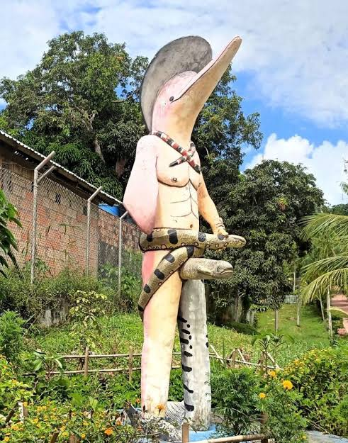
La légende
La nuit, le dauphin rose sort de l'eau en beau jeune homme, séduit, puis disparaît. L'enfant né est le « Boto-filho ». Chez les Kukama, certains « dauphins » sont en réalité des Karuaras déguisés.
Ambivalence
Sédacteur et craint · emmène parfois les femmes vers le monde sous-marin. Récits souvent transmis par les femmes · rapport complexe aux forces invisibles.
Aujourd'hui
Folklore vivant (tours à Iquitos) · l'animal réel (Inia geoffrensis) est protégé et menacé.
05 · Mythologie · Monde de l'eau
Purahua · Yacumama
Même mère des eaux, Mui watsu tsunin (kukama) · Yacumama (quechua) « mère de l'eau »
La boa géante
Serpent aquatique colossal (parfois « kilomètres » de long dans les récits). Gardienne du monde fluvial · corps qui (re)génère la vie aquatique et le bord du fleuve.
Paysage vivant
Ses déplacements créent plages, lagunes qui ne s'assèchent pas, effondrements de berges, détournements de cours d'eau. Image du fleuve et du territoire ancestral.
Éthique
« L'eau est vivante » · ne pas surpêcher, respecter les tabous. Lien systémique entre serpent, corps humain et société : une transgression dans l'un touche les autres.
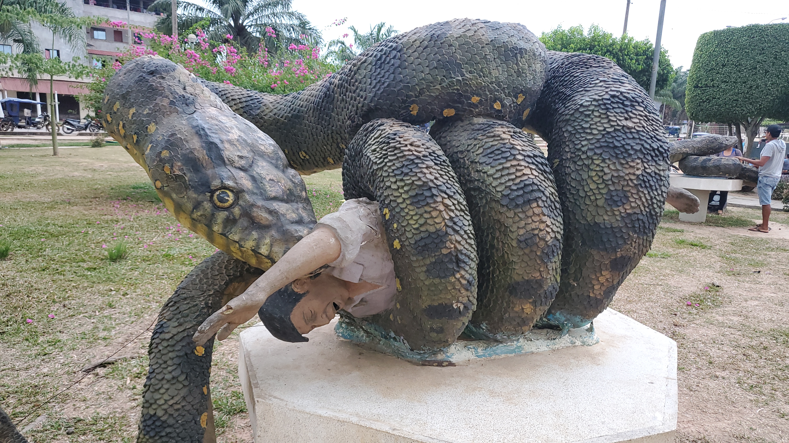
05 · Mythologie · Monde de la forêt
Chullachaki · Shapishico · Iwirati Tuwa
Même esprit gardien, quechua chulla chaki « pied inégal » · shapishico (Loreto) · iwirati tuwa (kukama)
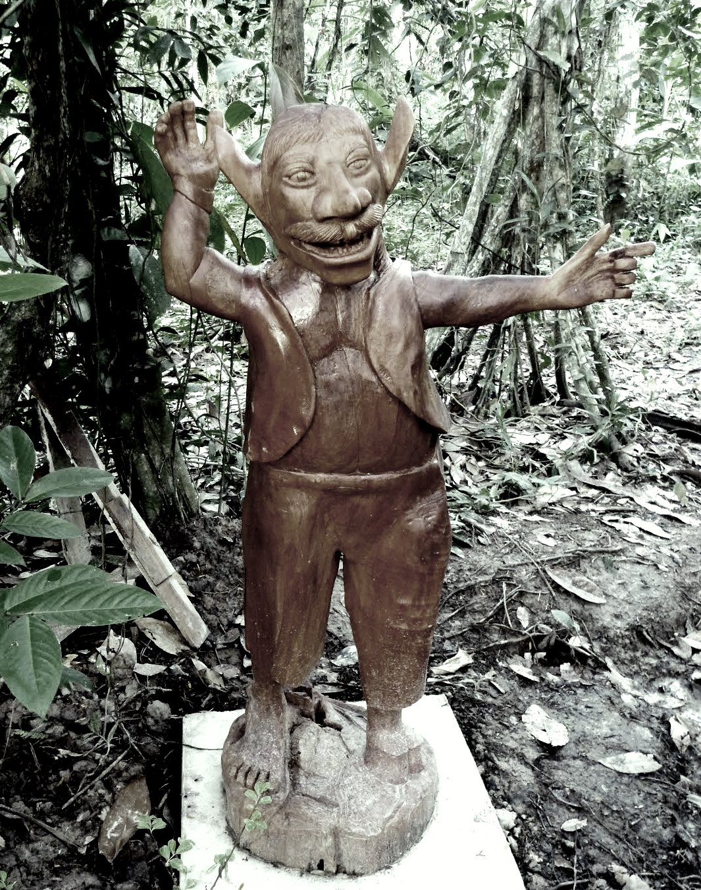
La créature
Petit être (~1 m), un pied humain et l'autre en sabot / patte d'animal. Trickster de terra firme : prend l'apparence d'un proche pour égarer dans la jungle.
Pouvoirs
Métamorphose, désorientation (on tourne en rond). Protège arbres et gibier · punit qui viole les tabous de la forêt.
Signification
La forêt est vivante et gardée. Humilité : l'humain n'est jamais seul sous la canopée.
05 · Mythologie · Monde de la forêt
Tunche : le sifflement de la nuit
Pas une bête · un spectre
Esprit d'un homme consumé par la culpabilité ou la douleur, condamné à errer dans la selva jusqu'à trouver la paix.
Le sifflement
Sifflement aigu dans l'obscurité. Paradoxal : s'il semble loin, il est tout près ; s'il résonne à côté, il est déjà parti.
Le piège
Répondre au sifflement, c'est provoquer son destin · panique, labyrinthe forestier, faim ou bêtes. Avec le Chullachaki, le Tunche incarne le respect archaïque pour ce qui précède l'humain dans la nuit.
05 · Mythologie · Monde de la forêt
Sachamama : la mère de la forêt
Sacha = forêt · mama = mère · pendant terrestre de la Purahua / Yacumama
Serpent-forêt
Boa colossale ; parfois arbres et animaux vivent sur son dos. Selva vivante, organique, en mouvement. Médiation terre ↔ ciel (diamant frontal, fils invisibles).
Gardienne
Trace des sentiers pour les animaux. Intrus et chasseurs irrespectueux : fièvre, ventre-caverne, orages et tremblements.
Nourricière & destructrice
Vitalité de la selva elle-même. Présente dans les récits de Puerto Miguel (Casilda, Nelvis) · figure privilégiée pour le monde forestier du musée Shapishiko.
05 · Mythologie · Monde du ciel
Pléiades & Tarawi
Wata ts+tsu · calendrier vivant · la sœur devenue Aramus guarauna (tarawi / courlan)
Calendrier du ciel
Réapparition à l'est : semis en várzea, migration des poissons, baissante. Disparition à l'ouest : pluies, froid, transformations climatiques.
Frères montés au ciel
Après la mort du père, les frères grimpent en fourmis par une canne isana jusqu'au firmament. La sœur cadette reste en bas.
Le lamento du tarawi
Transformée en oiseau, elle appelle « tsa k+w+ra » (« mes frères »). Les Pléiades consolent en versant la brume matinale (tsaw+ / sereno). Le ciel kukama est un monde de souvenirs.
05 · Mythologie · Monde du ciel
Homme Héron · Uri kunumi unuri
Le récit
Une héronne-homme s'éprend d'une femme abandonnée, se fait jeune homme, l'épouse et la nourrit de sa pêche, à condition qu'elle ne le suive jamais.
La rupture
Curieuse, elle le suit et découvre la vérité. Il l'abandonne, elle et l'enfant · la confiance rompue met fin au lien entre humains et oiseau-personne.
Lecture
Les oiseaux peuvent être des personnes. Comme Ayaymama (« ¡ayay mamá! ») ou le tarawi, le chant porte un deuil et un avertissement sur les liens familiaux. Variantes : chez les Asháninka, parfois un colibri.
05 · Mythologie · Monde du ciel
Trueno Mama : origine du tonnerre
Alliance terre–ciel
Un jeune terrestre épouse une femme-étoile descendue pour manger de l'achiote. Leur lignée nombreuse monte au ciel avec la fumée d'arachide.
Deux oiseaux médiateurs
Le père tente de les rejoindre : le vautour (urubu) échoue et demande un prix terrible ; le colibri réussit en échange des fleurs du bosquet.
Ce que ça dit
Tonnerre et foudre naissent d'un lien dangereux entre humains et êtres célestes. Les oiseaux de canopée sont passeurs entre mondes, messagers, mais jamais gratuits.
05 · Mythologie · Monde du ciel · Tsumi
Tsumi : le sage entre les mondes
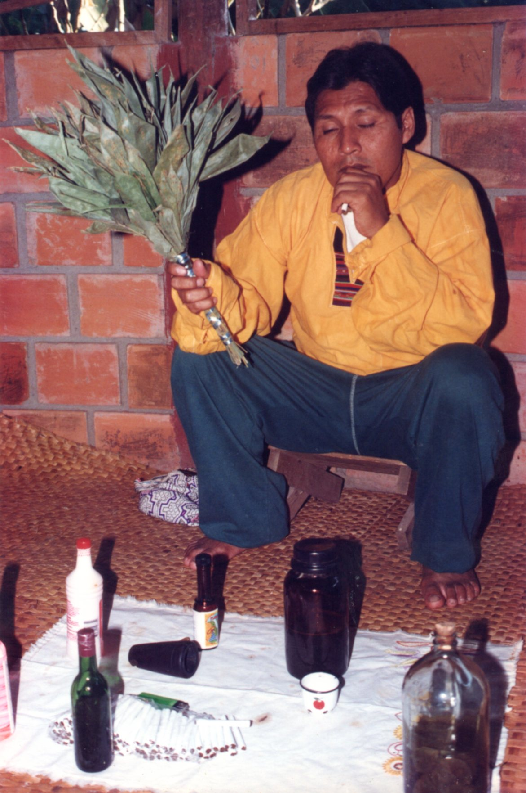
Qui est le tsumi ?
En kukama : guérisseur, sage, chamán le plus puissant. Marche sous l'eau, se transforme en animal, invoque jaguar, mère de l'eau, mère de la terre.
Formation
On naît pour le devenir · initié par un aîné, puis diètes de plantes pour devenir « banco » (réceptacle d'esprits). Aujourd'hui, certains disent qu'il ne reste que des ikuans (« ceux qui savent »).
Interface avec les mythes
Tabac, plantes maîtresses, icaros · le tsumi / vegetalista fait le pont entre humains et Karuaras, Purahua, Chullachaki. Les mythes encodent le savoir.
05 · Mythologie · Conclusion
Mythes & sagesse écologique
Savoir encodé
Rivière (Purahua) · forêt (Chullachaki, Sachamama) · animaux (Boto) · ciel (Pléiades = calendrier). Réciprocité : ne prendre que le nécessaire.
Outil de conservation
Les récits deviennent messages de persuasion écologique, y compris pour le Musée Shapishiko et les bénévoles AKUU.
Transmission
Contes fondateurs, langue kukama, ateliers · le musée ancre ces savoirs à Puerto Miguel.
Savoir menacé
Urbanisation et perte de langue coupent les jeunes des récits, et donc de cette éthique des trois mondes.